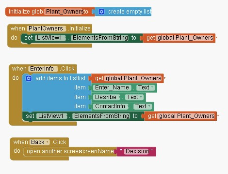

As shown in the code below, MITAppInventor was used to create an app that allows users to search for plant sitters. The app provides a list of plant sitters for plant owners to choose from.
This app functions like a Pet Sitter Finder, but for plants. People are able to sign up as pet owners or pet sitters. Plant owners in search of someone to take care of their plants for a couple days are able to message plant sitters.
